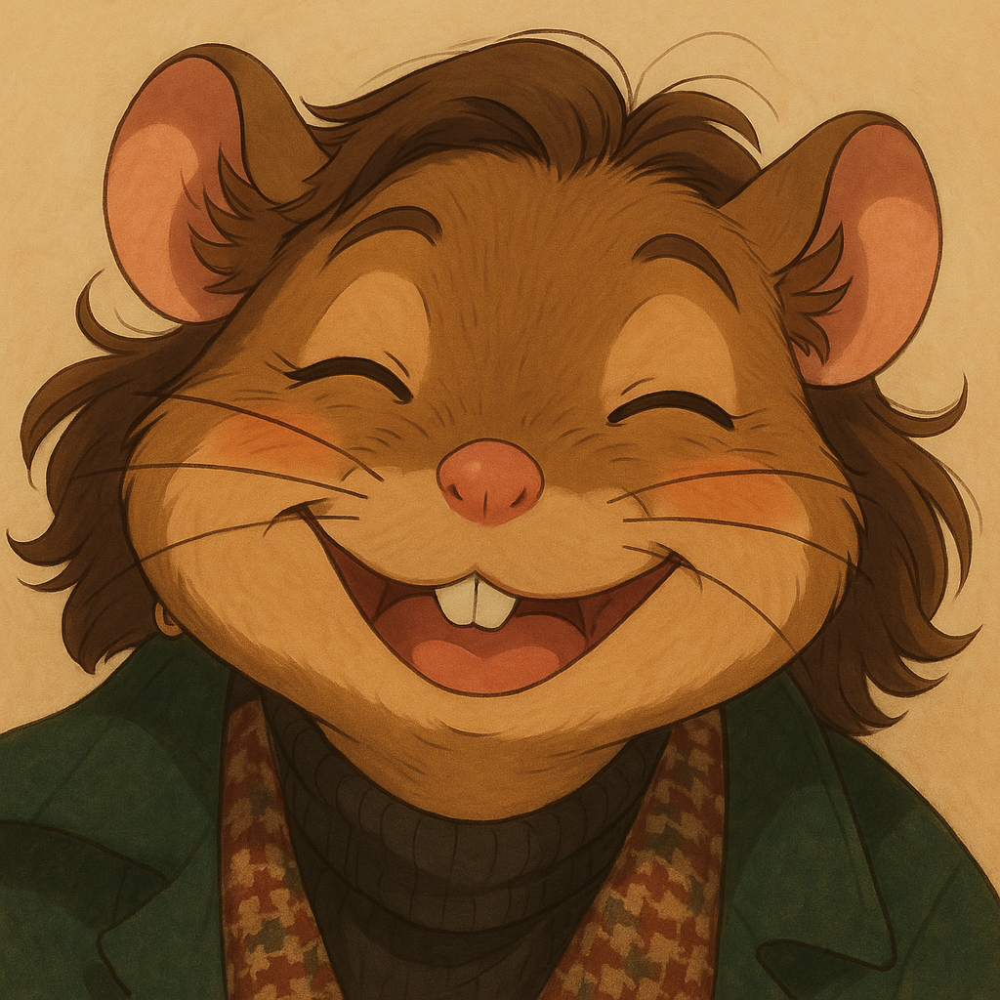
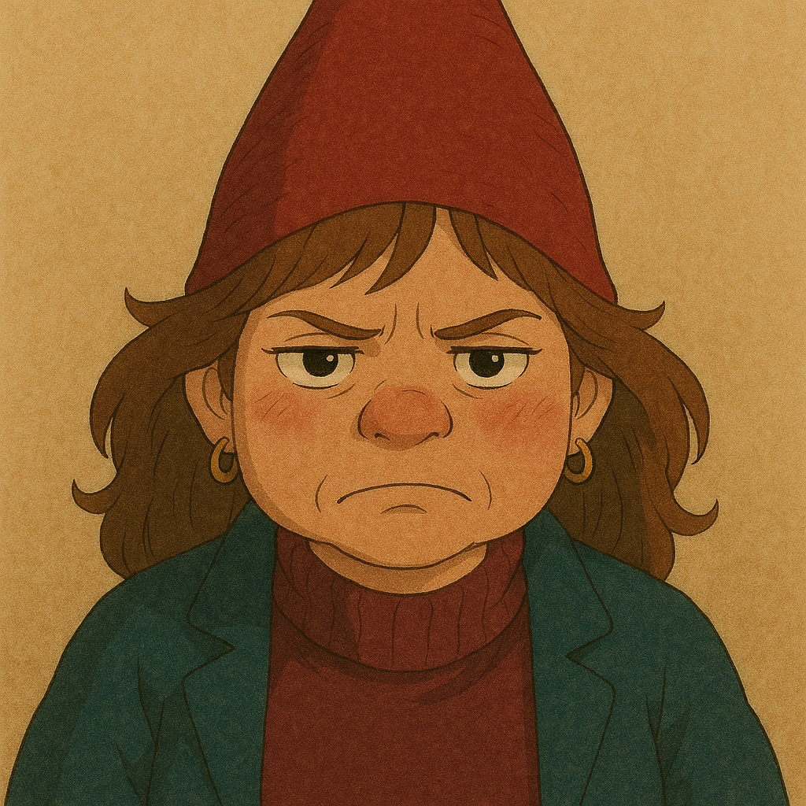
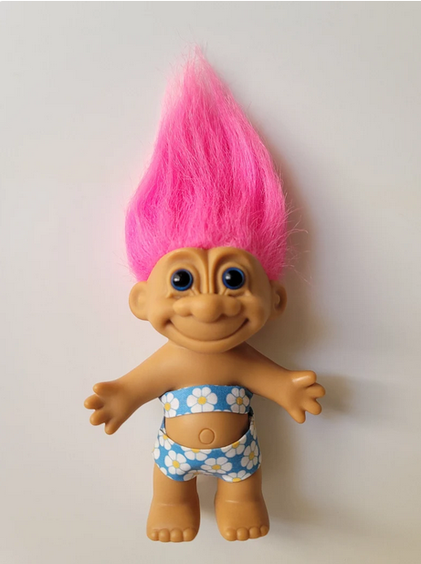

🐭 Bongre.gnome
Chronique d’une créature douce et dramatique.
Deux visages, une glace : la musaraigne fond, le gnome grince.

La musaraigne, dans son habitat naturel : une couette, un câlin, et une glace Ben& Jerry's.

Grumpy le gnome. Elle ne parle plus, elle marmonne. Ne surtout pas proposer de sortir. Solution : sucre (glace Ben & Jerry's), eau et dodo.

Quand l’énergie cosmique s’empare d’elle à 7 h 30 du matin. Gnome mode activé.